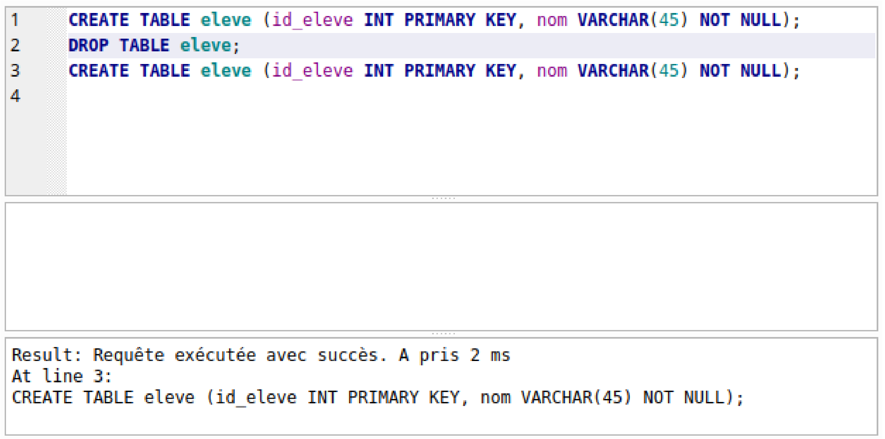
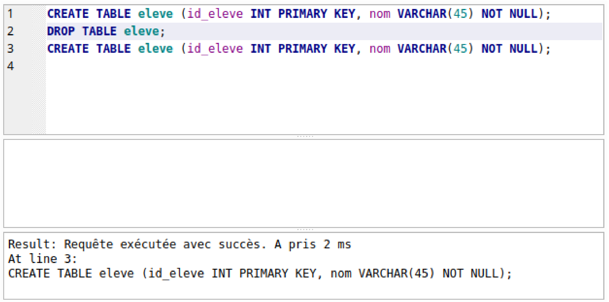
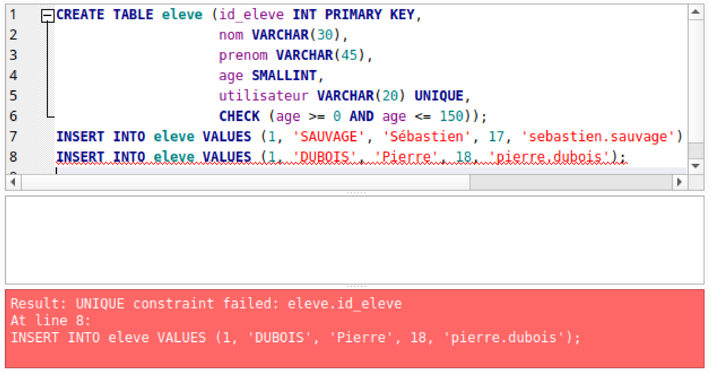

\huge \textbf{Thème 2}\normalsize
\Large \textbf{Chapitre 2 : Bases de données relationnelles}\normalsize
Introduction⚓︎
Le modèle relationnel étudié au chapitre précédent est un modèle mathématiques permettant de raisonner sur des données tabulées comme les données sauvegardées sous forme de fichiers CSV. Il est mis en oeuvre par un logiciel particulier, le système de gestion de bases de données (SGBD) relationnels. La plupart des SGBD relationnels utilisent le langage SQL (Structured Query Langage).
Le langage SQL permet d'envoyer des ordres au SGBD :
- des mises à jour : création, ajout ou suppressions de relations ou d'entités ;
- des requêtes : récupération de données à partir de critères définis auparavant.
Dans le cadre de l'enseignement NSI de terminale, nous travaillerons avec le logiciel DB Browser for SQLite 1
Il est gratuit et disponible sur différents OS. Quelques adaptations pourraient être nécessaires pour le langage mySQL par exemple.
SQL : un langage de définition de données⚓︎
Directement inspiré du modèle relationnel introduit par E.Codd, le langage SQL permet la création de tables dans une base de données relationnelle. Ce langage est bien sûr standardisé (sous la référence ISO/IEC 9075).
Il suffit d'écrire une succession d'ordres pour interagir avec le SGBD.
Créer une table⚓︎
Pour créer une table en langage SQL, il suffit d'utiliser les mots clés CREATE TABLE.
La syntaxe est alors la suivante :
\(\(\begin{array}{ll} \texttt{CREATE TABLE \textit{nom\_de\_la\_table} (} & \textit{\texttt{attribut}}_\textit{\texttt{1}}\textit{\texttt{ domaine}}_\textit{\texttt{1}}\textit{\texttt{ contrainte}}_\textit{\texttt{1}}\textit{\texttt{,}} \\ & \texttt{...,} \\ & \textit{\texttt{attribut}}_\textit{\texttt{n}}\textit{\texttt{ domaine}}_\textit{\texttt{n}}\textit{\texttt{ contrainte}}_\textit{\texttt{n}}\textit{\texttt{,}} \\ & \textit{\texttt{contrainte\_globale}}_\textit{\texttt{1}}\textit{\texttt{,}} \\ & \texttt{...,} \\ & \textit{\texttt{contrainte\_globale}}_\textit{\texttt{k}}\texttt{);} \\ \end{array}\)\)
Remarque⚓︎
- La casse des mots importe peu en langage SQL :
EcrireCREATE TABLEoucreate tableouCrEaTe TaBlErevient à effectuer le même ordre (créer une table).
Malgré tout, pour faciliter la lisibilité des ordres donnés, il s'agira de respecter les normes : lettres capitales pour les mots clés SQL et lettres minuscules pour les noms d'attributs. - Les contraintes ne sont pas obligatoires.
Modèles relationnel et langage SQL : des concepts légèrement différents⚓︎
Strictement parlant, un modèle relationnel et une table SQL ne sont pas des concept identiques. En effet, une table peut contenir des doublons, c'est à dire qu'il n'y a pas obligation lors de la création d'une table de définir une clé primaire.
Aussi, même si les concepts sont différents, par la suite, nous pouvons malgré tout nous permettre d'assimiler Modèle relationnel et table, Attributs et colonnes, Entités et lignes.
\newpage
Types de données en SQL⚓︎
Aux domaines des attributs dans le modèle relationnel correspond des types de données en SQL.
Types numériques⚓︎
Pour les types numériques, le langage SQL propose plusieurs représentation pour des nombres de type d'entiers ou de flottants :
Remarque⚓︎
DECIMAL permet bien de définir un type de nombres décimaux de manière exacte. A la différence de REAL, les valeurs sont exactes mais nécessitent de définir à l'avance le nombre de chiffres après la virgule. Cela peut s'avérer très utile pour travailler avec des valeurs exactes (donc non approchées), comme dans le domaine banquaire.
A retenir⚓︎
Avant de choisir un type décimal, il faut se poser les questions suivantes :
- Quel est le plus grand nombre que je serai amené à stocker ?
- Quel est le plus petit nombre que je serai amené à stocker ?
- De quelle précision (nombre de chiffres après la virgule) aurais-je besoin ?
Types textes⚓︎
Le langage SQL permet de définir également des types alphanumériques pour les domaines de type String. Les principaux sont :
\begin{tabular}{|c|c|c|}
\hline
\textbf{nom du type} & \textbf{description} & \textbf{taille (en bits)} \
\hline \hline
\texttt{CHAR (\textit{n})} & Chaîne d'exactement \texttt{\textit{n}} caractères. & \(32 + 8 n\) \
& Les caractères manquant sont complétés par des espaces.& \
\hline
\texttt{VARCHAR (\textit{n})} & Chaîne d'au plus \texttt{\textit{n}} caractères. & \(32 + 8 n\) maximum \
\hline
\texttt{TEXT} & Chaîne de taille quelconque & \(32 + 8 \times \text{taille de la chaîne}\) \
& (le maximum est supérieur à 8 000 caractères) & \
\hline
\end{tabular}
Type Booléen⚓︎
Attention⚓︎
Le type BOOLEAN est optionnel dans le standard SQL. Cela signifie que ce type peut ne pas exister dans certains SGDB. Si tel est le cas, on peut par exemple utiliser un type CHAR(1), texte d'un seul caractère, et on ajoute la contrainte que les valeurs ne peuvent être que 'T' ou 'F'.
Type des dates, durées et instants⚓︎
Afin de résoudre de nombreux problèmes complexes liés aux dates et durées, le standard SQL propose différents types, écrits comme de simples chaînes de caractères (mais avec des contraintes spécifiques) :
Astuce⚓︎
Il est possible d'opérer une addition de jours à un type DATE. Cela tient compte évidemment des changements de mois, d'année et des années bissextiles.
Par exemple, si \(d\) est un type DATE, \(d + 10\) sera un type DATE contenant la date 10 jours après \(d\).
Remarque⚓︎
Selon les SGBD, les valeurs minimales et maximales peuvent varier pour les types DATE et TIMESTAMP.
Valeur NULL⚓︎
NULL⚓︎
Une valeur NULL existe en SQL. Elle représente une absence de valeur et peut être utilisée à la place de n'importe quelle valeur, quel que soit le type attendu.
Attention⚓︎
La valeur NULL est à utiliser avec précautions car elle peut être une source d'erreur suite à une violation des contraintes d'intégrité (clé étrangère ayant comme valeur NULL par exemple).
Spécification des contraintes d'intégrité⚓︎
Clé primaire⚓︎
Clé primaire⚓︎
Les mots clé PRIMARY KEY permettent d'indiquer qu'un attribut est une clé primaire.
Si une clé primaire est constituée de plusieurs attributs, on spécifie cette contrainte après la définition de l'ensemble des attributs de la table.
Exemple⚓︎
Si on considère une relation Elèves modélisant les élèves d'une classe en supposant qu'aucun élève ne porte les mêmes NOM Prénom. On peut définir de deux manières une table Elèves :
1 2 3 | |
1 2 3 | |
Clé étrangère⚓︎
Clé étrangère⚓︎
Un attribut peut être référencé comme une clé étrangère à l'aide du mot clé REFERENCES suivi de la table et de la clé primaire à laquelle elle est associée.
Exemple⚓︎
Dans le cadre d'un modèle relationnel avec trois relations eleve, classe et appatenance, la relation appartenance contient deux clés étrangères liées aux clés primaires des deux autres tables. Dans ce cas, on peut créer les tables de la manière suivante :
1 2 3 4 5 6 7 8 | |
Unicité, non nullité⚓︎
Il est parfois utile qu'un attribut, bien que non clé primaire, puisse être défini comme étant unique afin d'ajouter une contrainte au modèle relationnel.
Attribut unique⚓︎
Pour indiquer qu'un attribut est unique, on utilise le mot clé UNIQUE comme contrainte de l'attribut.
Exemple
Dans l'exemple précédent, on peut définir dans la table élève un attribut utilisateur, correspondant au code d'accès au réseau de l'établissement. Ce code est unique (deux élèves ne peuvent pas avoir le même code d'accès avec des comptes différents. La création de la table peut s'écrire comme ci-dessous :
1 2 3 4 | |
Non nullité⚓︎
Une bonne pratique consiste à indiquer qu'un attribut ne peut pas être NULL.
Pour indiquer qu'un attribut ne peut prendre la valeur NULL, on utilise les mots clé NOT NULL.
Non nullité et clé primaire⚓︎
PRIMARY KEY implique obligatoirement NOT NULL lors de la création d'une table.
Contraintes utilisateur⚓︎
Contraintes utilisateur⚓︎
Il est possible de définir des contraintes utilisateur portant sur les attributs à l'aide du mot clé CHECK, suivi d'une formule booléenne.
Ces contraintes sont à placer obligatoirement à la fin de la création de la table.
Exemple⚓︎
On peut ajouter l'âge de l'élève dans la table élève. Cet âge doit être compris entre 0 et 150 ans ...
La création de la table s'effectue de la manière ci-contre :
1 2 3 4 5 6 | |
Suppression de tables⚓︎
Supprimer une table⚓︎
Pour supprimer une table, on utilise les mots clé DROP TABLE suivi du nom de la table à supprimer.
Astuce⚓︎
Comme il ne peut pas y avoir deux tables portant le même nom, si l'on veut recréer une table existante selon un autre modèle, il faut penser à la supprimer avant de la créer de nouveau.
De manière générale, penser à supprimer une table avant de la recréer permet d'éviter des messages d'erreurs inattendus.
 

Insertion dans une table⚓︎
Insertion dans une table⚓︎
Une fois la table construite, pour insérer des valeurs, on utilise les mots clé INSERT INTO suivi du nom de la table, du mot clé VALUES et enfin des données écrites sous forme d'un k-uplet.
On peut modifier l'ordre des attribut dans le k-uplet mais il faut le spécifier après le nom de la table.
Exemple⚓︎
On peut définir une table élève puis y insérer des valeurs de la manière ci-dessous :
1 2 3 4 5 6 7 8 9 10 11 | |
Remarque⚓︎
Les contraintes d'intégrité sont vérifiées au moment de l'insertion. Si une violation des contraintes a lieu, un message d'erreur apparaît et les données ne sont pas ajoutées à la table comme dans l'exemple ci-dessous où id_eleve, étant une clé primaire est unique :

Exercices⚓︎
Exercice⚓︎
On considère le modèle relationnel d'un répertoire téléphonique suivant : \(\texttt{répertoire}\left(\underline{\textit{num\_tel}\ \textbf{String}},\ \textit{nom}\ \textbf{Int},\ \textit{Prénom}\ \textbf{Int}\right)\)
Donner un ordre SQL permettant de créer une table correspondant à cette relation avec un maximum de contraintes d'intégrité.
Exercice⚓︎
On considère les modèles relationnels suivants modélisant le bulletin d'un élève :
- \(\textit{Eleves}\left(\textit{nom}\ \textbf{String},\ \textit{Prénom}\ \textbf{String},\ \underline{\textit{num}\ \textbf{String}}\right)\)
- \(\textit{Discipline}\left(\textit{intitulé}\ \textbf{String},\ \underline{\textit{m\_id}\ \textbf{INT}}\right)\)
- \(\textit{Note}\left(\underline{\#\textit{num}\ \textbf{String},\ \#\textit{m\_id}\ \textbf{INT}},\ \textit{note}\ \textbf{Float}\right)\)
Donner les ordres SQL permettant de créer les tables correspondant à ces relations avec un maximum de contraintes d'intégrité.
Exercice⚓︎
On considère les deux tables suivantes qui stockent des résultats de parties entre des joueurs :
1 2 3 4 5 6 7 | |
- Ecrire le modèle relationnel correspondant.
- Lister toutes les contraintes d'intégrité et pour chacune, donner des ordre SQL violant ces contraintes.
Exercice⚓︎
Modifier les ordres de création de table de l'exercice précédent pour prendre en compte les modifications suivantes :
- La table
partiecontient en plus une colonnejournon nulle, indiquant la date à laquelle la partie a eu lieu ; - les scores ne peuvent pas être négatifs ;
- deux joueurs ne peuvent pas jouer plusieurs fois le même jour.
Exercice⚓︎
Ecrire un programme en langage Python qui lit un fichier CSV infos.csv au format suivant :
- les champs sont séparés par des \guillemotleft;\guillemotright
- le fichier contient 4 colonnes \texttt{nom}, \texttt{prénom}, \texttt{annee_naissance} et \texttt{taille} représentant le nom, prénom, l'année de naissance et la taille (en cm) de personnes.
Le programme doit écrire sur sa sortie standard un script SQL qui :
- crée une table permettant de stocker ces informations ainsi qu'un identifiant unique (entier) servant de clé primaire ;
- remplit la table avec les données du fichier CSV.
\underline{{\textit{\textbf{Sources}}}}
- numérique et sciences informatiques, Tle, Ed. ellipses. p297 à 306. ISBN 978-2-340-03855-4.
- (2020, 28 septembre). Les types SQL. SQL Facile !. https://www.sqlfacile.com/apprendre_bases_de_donnees/les_types_sql
-
Logiciel libre et gratuit, disponible à l'adresse https://sqlitebrowser.org/dl/ ↩